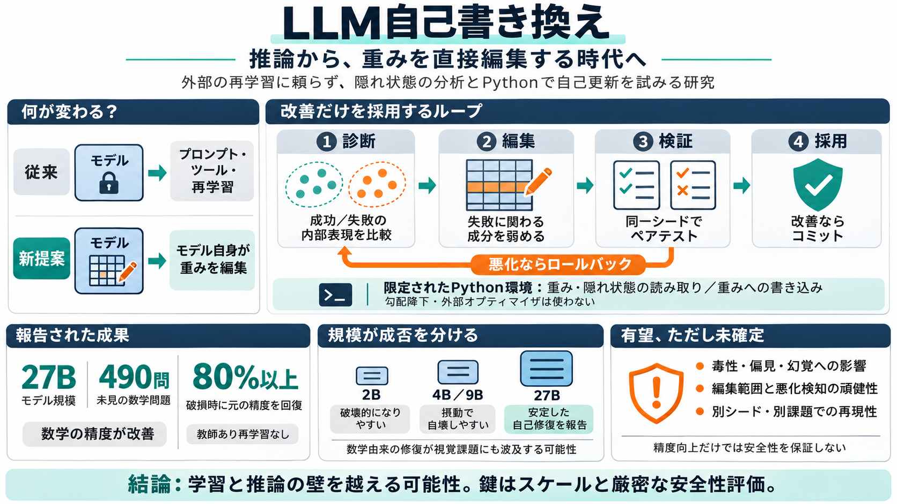

Language Models Can Rewrite Their Own Weights
A language model opens its own weight files, reads its hidden states, writes a small edit to layer 8, tests the change, …

推論が、重みを書き換える
大規模言語モデルが、推論と隠れ状態の分析を根拠に、外部学習なしで自分の重みを編集する研究方向性です。
ポイント（bilingual / 日本語）: Self-rewriting（自己書き換え）＝学習パイプラインではなく、限定されたPython環境でテンソル編集まで行う。
学習は終わり、改善は外へ
通常のLLMは学習が終わると重みは固定で、改善はプロンプト調整・外部ツール・再学習（勾配降下）に頼ります。
検証で安全に、編集を選ぶ
モデルは、失敗の原因らしき内部表現を推定し、重み行列を“方向の弱め/成分の除去”のようにコードで編集して、改善だけを採用します。
“権限付きPython”が要
モデルには「重みを読む・書く」権限と、隠れ状態を読み取る手段、さらにテスト評価環境が与えられます。
重要：勾配降下や外部オプティマイザを使わず、推論とPython実行で編集方針を回します。
破損を積まない設計
編集のたびに改善が確認できなければロールバックし、無限に壊してしまうリスクを抑えます。
数字：held-outで改善
27B規模のモデルで、テキスト数学のheld-out問題490問に対して精度が有意に改善したとされています。
また、改善が確認された編集のみを段階的に積み重ねても性能低下が起きないと主張されています。
壊れたモデルも戻る
一部がノイズで壊れた破損モデルでも、教師あり再学習なしで元精度の80%以上を回復できたと述べられています。
要点：何が“価値”か
重み空間の“弱め”
成功と失敗の隠れ状態差から、「失敗を引き起こす内部表現（方向ベクトルなど）」を仮説化し、その成分を弱めます。
小ささは壊れやすい
同一系統でも、2Bは壊しがちで、4B/9Bはランダム摂動で自壊するのに対し、27Bだけが安定に自己修復できたと報告されています。
数学→視覚でも回復
テキスト数学で得た修復ルールが、学習データに含まれていない視覚・画像マルチモーダルベンチマークでも破損性能を回復したとされています。
有望だが、確定はできない
要約レベルでは、評価手順の完全性や統計検定、再現実験、編集範囲制約、安全性対策の形式的保証が読み取れません。
次に見るべき不足
結論を“画期的で有望、ただし追加の形式的評価が必須”にするには、少なくとも次を確認する必要があります。
推論エージェントの新章
自己書き換えは「学習と推論の壁」を越える可能性を示しますが、スケール依存と安全性評価の厳密化が決定的です。
（参考）ここで扱った内容は要約中心です。論文詳細で評価手順・統計・再現性・安全性を必ず確認してください。
A language model opens its own weight files, reads its hidden states, writes a small edit to layer 8, tests the change, …
> > Likewise, asked to make Qwen3.5-0.8B better at math without gradients, Astra identifies an issue in its weights caus…
73% balanced accuracy: Qwen 27B predicted subtle weight-edit effects using direct weight access, compared with 57.8% usi…
MIT researchers say GPT-6 Astra improved a small Qwen model’s math score from 7.9% to 48.1% by directly editing just 0.0…
Member-only story # When LLMs Edit Other LLMs: Weight-Space Programming and the Conditions for Recursive Self-Improveme…